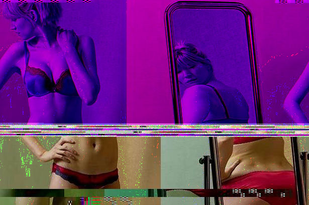
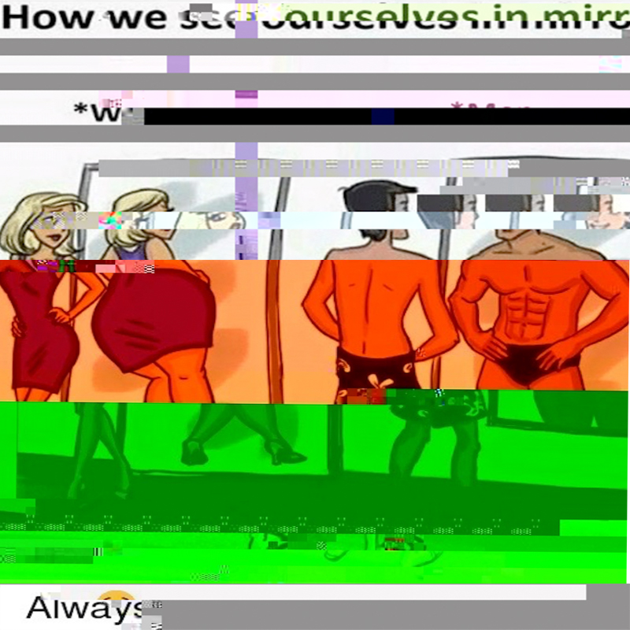

"LookintoMirror", Photoshop Digital Image w/ Audacity, 2019

The following images show the human body and how heavier weight in woman or small muscles/abs on men are considered an imperfect quality in our society. That this difference of body shapes are portrayed wrongly and are used as a comparison to others as suppose to one health or lifestyle. Both represent self-esteem, body image, and sexuality.
"SupSXY", Photoshop Digital Image w/ TextEdit/Notepad++, 2019
